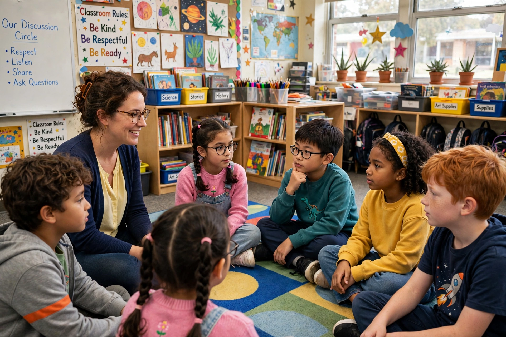

| Field | Education, moral development |
|---|---|
| Core values often taught | Respect, responsibility, fairness, caring, citizenship, trustworthiness |
Character education is an approach to schooling that aims to develop pupils' ethical and civic virtues alongside academic learning.
History
Moral instruction was central to early public schooling; it receded in the mid-20th century amid values-clarification and pluralism debates, then revived from the 1980s through movements promoting core values, service learning and school ethos.
Approaches
Programmes use direct teaching of virtues, literature and discussion of dilemmas, restorative discipline, extracurricular activities and community service. Advocates such as Thomas Lickona emphasised schools as moral communities.
Criticism
Critics question whose values are chosen, whether traits transfer outside school, and whether programmes oversimplify moral life into slogans.